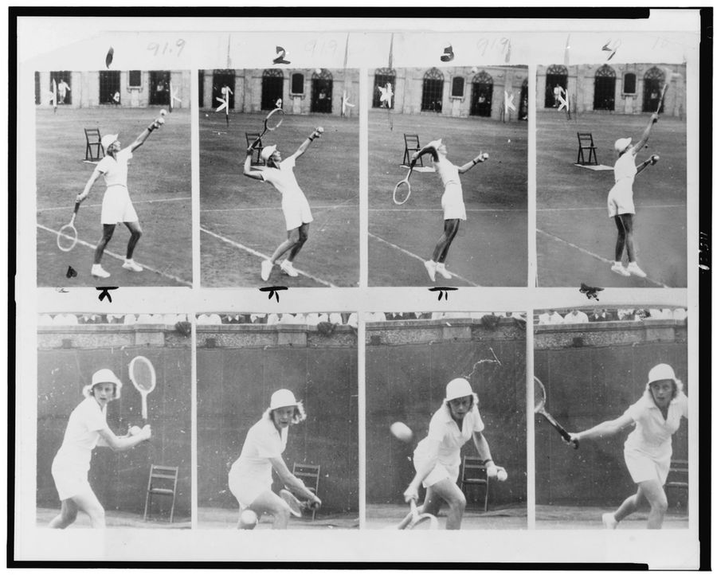

EU首脳会議：メルツ首相、予算協議の早期終了を発表EU-Gipfel: Merz kündigt vorzeitiges Ende der Haushaltsberatungen anEUの国家・政府首脳は、メルツ首相によると、将来の予算に関する協議をすでに木曜日に終える。加盟国は…
EU首脳会議：メルツ首相、予算協議の早期終了を発表EU-Gipfel: Merz kündigt vorzeitiges Ende der Haushaltsberatungen anEUの国家・政府首脳は、メルツ首相によると、将来の予算に関する協議をすでに木曜日に終える。加盟国は… 感謝祭：嵐で東海岸がまひ――ニューヨークのパレード延期Thanksgiving: Sturm legt Ostküste lahm – Parade in New York verschoben激しい嵐により、米国では約77万の顧客が電力供給を絶たれた。数百便のフライトが欠航する中、ニューヨークの伝統的な
感謝祭：嵐で東海岸がまひ――ニューヨークのパレード延期Thanksgiving: Sturm legt Ostküste lahm – Parade in New York verschoben激しい嵐により、米国では約77万の顧客が電力供給を絶たれた。数百便のフライトが欠航する中、ニューヨークの伝統的な 英国勢に敗れて準々決勝敗退：ズベレフらはデビスカップ制覇への挑戦で早期敗退Viertelfinal-Aus gegen Briten: Zverev und Co. scheitern früh an Titel-Mission im Davis Cup
英国勢に敗れて準々決勝敗退：ズベレフらはデビスカップ制覇への挑戦で早期敗退Viertelfinal-Aus gegen Briten: Zverev und Co. scheitern früh an Titel-Mission im Davis Cup アルバニアの若者たちは「フラミンゴ革命」で抗議し、もはや国を離れなくなっているAlbania's youth are protesting in Flamingo Revolution, not leaving the country anymore硬直した政治体制と汚職に対する若者の抗議が、アルバニアのエディ・ラマ首相の政権を揺るがしている。それはまた、より少ない若い人
アルバニアの若者たちは「フラミンゴ革命」で抗議し、もはや国を離れなくなっているAlbania's youth are protesting in Flamingo Revolution, not leaving the country anymore硬直した政治体制と汚職に対する若者の抗議が、アルバニアのエディ・ラマ首相の政権を揺るがしている。それはまた、より少ない若い人 アルバニアの若者たちは「フラミンゴ革命」で抗議し、もはや国を離れていないAlbania's youth are protesting in Flamingo Revolution, not leaving the country anymore硬直した政治体制と腐敗に対する若者の抗議は、アルバニアのエディ・ラマ首相の政権を揺るがしている。また、国を離れる若者が減っていることも示している
アルバニアの若者たちは「フラミンゴ革命」で抗議し、もはや国を離れていないAlbania's youth are protesting in Flamingo Revolution, not leaving the country anymore硬直した政治体制と腐敗に対する若者の抗議は、アルバニアのエディ・ラマ首相の政権を揺るがしている。また、国を離れる若者が減っていることも示している ジェラール・ドパルデュー、フランスでレイプと性的暴行の罪で裁判へGerard Depardieu to stand trial in France for rape and sexual assaultパリ控訴院は、2018年に女優をレイプし性的暴行を加えた罪で、77歳のフランス人俳優を裁判にかける命令を支持した。
ジェラール・ドパルデュー、フランスでレイプと性的暴行の罪で裁判へGerard Depardieu to stand trial in France for rape and sexual assaultパリ控訴院は、2018年に女優をレイプし性的暴行を加えた罪で、77歳のフランス人俳優を裁判にかける命令を支持した。 最後から2番目のテストで成功：DHB女子、フランス戦ですでに欧州選手権の仕上がりErfolg im vorletzten Test: DHB-Frauen gegen Frankreich schon in EM-Form安定した守備と効率的な攻撃：ドイツの女子ハンドボール選手たちは、欧州選手権前最後から2番目のテストであるフランス戦で、メダル獲得への正当な希望を
最後から2番目のテストで成功：DHB女子、フランス戦ですでに欧州選手権の仕上がりErfolg im vorletzten Test: DHB-Frauen gegen Frankreich schon in EM-Form安定した守備と効率的な攻撃：ドイツの女子ハンドボール選手たちは、欧州選手権前最後から2番目のテストであるフランス戦で、メダル獲得への正当な希望を 司祭による虐待で過去最高の慰謝料――教区は責任に向き合わなければならないRekord-Schmerzensgeld nach Missbrauch durch Priester - Bistum muss sich der Verantwortung stellen歴史的な判決だ。ケルンの裁判官らは、聖職者による虐待についてカトリック教会に重大な責任があるとみている。これは
司祭による虐待で過去最高の慰謝料――教区は責任に向き合わなければならないRekord-Schmerzensgeld nach Missbrauch durch Priester - Bistum muss sich der Verantwortung stellen歴史的な判決だ。ケルンの裁判官らは、聖職者による虐待についてカトリック教会に重大な責任があるとみている。これは ヨーロッパリーグ ― ガザ戦争：ベシクタシュ対ハポエル・ベエルシェバで激しい暴動Europa League – Gazakrieg: Schwere Ausschreitungen bei Beşiktaş gegen Hapoel Beer-Shevaガザ戦争はサッカーにも影を落としている。ベシクタシュとベエルシェバの一戦は、すでにジョージアへ移されていた。どうやらあるプラ
ヨーロッパリーグ ― ガザ戦争：ベシクタシュ対ハポエル・ベエルシェバで激しい暴動Europa League – Gazakrieg: Schwere Ausschreitungen bei Beşiktaş gegen Hapoel Beer-Shevaガザ戦争はサッカーにも影を落としている。ベシクタシュとベエルシェバの一戦は、すでにジョージアへ移されていた。どうやらあるプラ ギニアビサウの軍事政権、大統領選挙を2年延期Guinea-Bissau junta delays presidential vote for 2 yearsこの決定は、軍が2025年11月26日に権力を掌握してからちょうど1年後に下された。軍事政権は、大統領選挙を実施するための条件が不十分だと述べた
ギニアビサウの軍事政権、大統領選挙を2年延期Guinea-Bissau junta delays presidential vote for 2 yearsこの決定は、軍が2025年11月26日に権力を掌握してからちょうど1年後に下された。軍事政権は、大統領選挙を実施するための条件が不十分だと述べた 旧ザーラ・ワーゲンクネヒト同盟（BSW）が新しい名称となり、AfDに秋波を送っている。この政党にまだ未来はあるのか？Das ehemalige Bündnis Sahra Wagenknecht (BSW) hat einen neuen Namen und flirtet mit der AfD. Hat die Partei noch eine Zukunft?連邦議会選挙での敗北を受け、BSWの創設者はトップの座を退いた。同盟が依然として影響力を持つのはザクセン＝アンハルト州だけで、そこで秋波を送って…
旧ザーラ・ワーゲンクネヒト同盟（BSW）が新しい名称となり、AfDに秋波を送っている。この政党にまだ未来はあるのか？Das ehemalige Bündnis Sahra Wagenknecht (BSW) hat einen neuen Namen und flirtet mit der AfD. Hat die Partei noch eine Zukunft?連邦議会選挙での敗北を受け、BSWの創設者はトップの座を退いた。同盟が依然として影響力を持つのはザクセン＝アンハルト州だけで、そこで秋波を送って… ベルリン：祖父がコカイン取引を手伝ったとされるBerlin: Großvater soll beim Kokaindealen geholfen habenある男は、集団で相当量の麻薬を取引したため収監されている。今、その祖父も当局の注目を集め
ベルリン：祖父がコカイン取引を手伝ったとされるBerlin: Großvater soll beim Kokaindealen geholfen habenある男は、集団で相当量の麻薬を取引したため収監されている。今、その祖父も当局の注目を集め 年金：Union、驚きの妥協案でSPDの虚を突くRente: Union überrumpelt SPD mit überraschendem KompromissvorschlagUnion会派の妥協案が、行き詰まった年金論議に動きをもたらした。SPDは不快感を示して反応している。
年金：Union、驚きの妥協案でSPDの虚を突くRente: Union überrumpelt SPD mit überraschendem KompromissvorschlagUnion会派の妥協案が、行き詰まった年金論議に動きをもたらした。SPDは不快感を示して反応している。 大企業、鉄道輸送コストの上昇に猛反発Großkonzerne laufen Sturm gegen steigende Transportkosten auf der SchieneBASF、バイエル、ザルツギッターなどの企業は、貨物輸送にますます多くの費用を支払わなければならなくなっている。その理由は、線路の使用料が上昇しているためだ。
大企業、鉄道輸送コストの上昇に猛反発Großkonzerne laufen Sturm gegen steigende Transportkosten auf der SchieneBASF、バイエル、ザルツギッターなどの企業は、貨物輸送にますます多くの費用を支払わなければならなくなっている。その理由は、線路の使用料が上昇しているためだ。 NS検索エンジン：台所、戦争、強制収容所――国家社会主義下の女性たちNS-Suchmaschine: Küche, Krieg, KZ: Frauen im Nationalsozialismus多くの女性がナチス政権を支えた。それでも1945年以降、彼女たちはたいてい非政治的だとみなされた。なぜ彼女たちの関与はしばしば見過ごされてきたのか？
NS検索エンジン：台所、戦争、強制収容所――国家社会主義下の女性たちNS-Suchmaschine: Küche, Krieg, KZ: Frauen im Nationalsozialismus多くの女性がナチス政権を支えた。それでも1945年以降、彼女たちはたいてい非政治的だとみなされた。なぜ彼女たちの関与はしばしば見過ごされてきたのか？ ヨーロッパリーグ第5節：レバークーゼンがザグレブに勝利Europa League, 5. Spieltag: Leverkusen gewinnt gegen Zagrebバイヤー04レバークーゼンは、ヨーロッパリーグ第5節でディナモ・ザグレブを破った。マリク・ティルマンが早い段階でレバークーゼンに先制点をもたらした。試合レポ
ヨーロッパリーグ第5節：レバークーゼンがザグレブに勝利Europa League, 5. Spieltag: Leverkusen gewinnt gegen Zagrebバイヤー04レバークーゼンは、ヨーロッパリーグ第5節でディナモ・ザグレブを破った。マリク・ティルマンが早い段階でレバークーゼンに先制点をもたらした。試合レポ ヴェネツィア・ビエンナーレ：フール・アル・カシミが2028年の展覧会を担当Biennale von Venedig: Hoor Al Qasimi kuratiert Ausstellung 2028アラブ首長国連邦出身の首長の娘であるフール・アル・カシミが、2028年のヴェネツィア芸術ビエンナーレの芸術監督を務める。彼女は…に数えられている
ヴェネツィア・ビエンナーレ：フール・アル・カシミが2028年の展覧会を担当Biennale von Venedig: Hoor Al Qasimi kuratiert Ausstellung 2028アラブ首長国連邦出身の首長の娘であるフール・アル・カシミが、2028年のヴェネツィア芸術ビエンナーレの芸術監督を務める。彼女は…に数えられている 危なげないレバークーゼン、ザグレブで地味な勝利を祝うSouveräne Leverkusener feiern glanzlosen Sieg in Zagreb経験豊かで冷静なパフォーマンスにより、バイエル・レバークーゼンはヨーロッパリーグのディナモ・ザグレブ戦で相手に一切の隙を与えなかった。
危なげないレバークーゼン、ザグレブで地味な勝利を祝うSouveräne Leverkusener feiern glanzlosen Sieg in Zagreb経験豊かで冷静なパフォーマンスにより、バイエル・レバークーゼンはヨーロッパリーグのディナモ・ザグレブ戦で相手に一切の隙を与えなかった。 U21、組み合わせに恵まれる ― オランダとの対決U21 mit Losglück - Duell mit den NiederlandenドイツU21代表は、2027年夏の欧州選手権で、グループDではまず強豪チームとの対戦を避け、ノルウェー、ベルギー、そしてオラ
U21、組み合わせに恵まれる ― オランダとの対決U21 mit Losglück - Duell mit den NiederlandenドイツU21代表は、2027年夏の欧州選手権で、グループDではまず強豪チームとの対戦を避け、ノルウェー、ベルギー、そしてオラ 警察と税関：数百人の職員がミュンヘンで店舗を検査Polizei und Zoll: Hunderte Beamte kontrollieren Geschäfte in München
警察と税関：数百人の職員がミュンヘンで店舗を検査Polizei und Zoll: Hunderte Beamte kontrollieren Geschäfte in München 犯罪：オストヴェストファーレンで家宅捜索、警察が出動Kriminalität: Durchsuchungen in Ostwestfalen - Polizei im Einsatz
犯罪：オストヴェストファーレンで家宅捜索、警察が出動Kriminalität: Durchsuchungen in Ostwestfalen - Polizei im Einsatz ヨーロッパリーグ：バイエル・レバークーゼンがディナモ・ザグレブ相手に危なげなく勝利Europa League: Bayer Leverkusen gewinnt souverän bei Dinamo Zagreb
ヨーロッパリーグ：バイエル・レバークーゼンがディナモ・ザグレブ相手に危なげなく勝利Europa League: Bayer Leverkusen gewinnt souverän bei Dinamo Zagreb チェス世界選手権：ドマラジュ・グケシュとジャヴォヒル・シンダロフが「サンバ・デ・ジャネイロ」をプレイSchach-WM: Dommaraju Gukesh und Javokhir Sindarov spielen den Samba de Janeiroジュネーブにブラジルの雰囲気：世界チャンピオンのドマラジュ・グケシュは、型破りなオープニングで挑戦者を考え込ませる――そしてクールにプレイする
チェス世界選手権：ドマラジュ・グケシュとジャヴォヒル・シンダロフが「サンバ・デ・ジャネイロ」をプレイSchach-WM: Dommaraju Gukesh und Javokhir Sindarov spielen den Samba de Janeiroジュネーブにブラジルの雰囲気：世界チャンピオンのドマラジュ・グケシュは、型破りなオープニングで挑戦者を考え込ませる――そしてクールにプレイする 大規模プロジェクト：ロストック市議会、ヴァルノウ橋にゴーサインGroßprojekt: Rostocker Bürgerschaft gibt grünes Licht für Warnowbrücke
大規模プロジェクト：ロストック市議会、ヴァルノウ橋にゴーサインGroßprojekt: Rostocker Bürgerschaft gibt grünes Licht für Warnowbrücke ヨーロッパにおける米軍駐留：メディア報道、米軍撤退に関する決定は延期へUS-Militärpräsenz in Europa: Medien: Entscheidung über US-Truppenabzug verschiebt sich
ヨーロッパにおける米軍駐留：メディア報道、米軍撤退に関する決定は延期へUS-Militärpräsenz in Europa: Medien: Entscheidung über US-Truppenabzug verschiebt sich 司法の誤判：無罪となったが自由ではない――セバスティアン・T.の人生 - SPIEGEL TVJustizirrtum: Freigesprochen, aber nicht frei – das Leben des Sebastian T. - SPIEGEL TVセバスティアン・T.は、無実にもかかわらず殺人犯として有罪判決を受け、946日間収監された。無罪判決後に取り戻した自由には影が差している：憤りは
司法の誤判：無罪となったが自由ではない――セバスティアン・T.の人生 - SPIEGEL TVJustizirrtum: Freigesprochen, aber nicht frei – das Leben des Sebastian T. - SPIEGEL TVセバスティアン・T.は、無実にもかかわらず殺人犯として有罪判決を受け、946日間収監された。無罪判決後に取り戻した自由には影が差している：憤りは ベルリンでのイローナ・W.に対する裁判：カンマーゲリヒトに出廷した1人のスパイProzess gegen Ilona W. in Berlin: Eine Spionin vor der Kammergerichtドイツ系ウクライナ人の彼女は、長年にわたりロシアの情報機関のためにスパイ活動を行っていたとされる。裁判開始に際し、ロシアのスパイとみられる被告は車椅子で現れた。2026年11月26日の『Wirtschaft vor acht』Wirtschaft vor acht vom 26.11.20262026年11月26日の『Wirtschaft vor acht』
ベルリンでのイローナ・W.に対する裁判：カンマーゲリヒトに出廷した1人のスパイProzess gegen Ilona W. in Berlin: Eine Spionin vor der Kammergerichtドイツ系ウクライナ人の彼女は、長年にわたりロシアの情報機関のためにスパイ活動を行っていたとされる。裁判開始に際し、ロシアのスパイとみられる被告は車椅子で現れた。2026年11月26日の『Wirtschaft vor acht』Wirtschaft vor acht vom 26.11.20262026年11月26日の『Wirtschaft vor acht』 「63歳年金」に関するFAQ：現在何が議論されているのか？FAQ zur "Rente mit 63": Was wird gerade diskutiert?「63歳年金」をめぐる議論はますます分かりにくくなっている。現在どのような提案が議論されているのか。連立政権内での動きを示唆するものは何か
「63歳年金」に関するFAQ：現在何が議論されているのか？FAQ zur "Rente mit 63": Was wird gerade diskutiert?「63歳年金」をめぐる議論はますます分かりにくくなっている。現在どのような提案が議論されているのか。連立政権内での動きを示唆するものは何か ドイツ企業、宇宙の兵器庫のための技術を研究Deutsche Firmen forschen an Technik für Waffendepots im Weltraum世界的な脅威情勢を背景に、防衛において宇宙の重要性が高まっている。ドイツ発の新技術により、迅速な輸送が可能になるはずだ
ドイツ企業、宇宙の兵器庫のための技術を研究Deutsche Firmen forschen an Technik für Waffendepots im Weltraum世界的な脅威情勢を背景に、防衛において宇宙の重要性が高まっている。ドイツ発の新技術により、迅速な輸送が可能になるはずだ デビスカップ：敗退の後は再編が待つDavis-Cup: Nach dem Aus ist vor dem Umbruchドイツはボローニャで開催されたデビスカップで悪くないテニスを見せたが、英国に敗れての敗退は妥当だった。今後、DHB代表は若返りを図ることになる
デビスカップ：敗退の後は再編が待つDavis-Cup: Nach dem Aus ist vor dem Umbruchドイツはボローニャで開催されたデビスカップで悪くないテニスを見せたが、英国に敗れての敗退は妥当だった。今後、DHB代表は若返りを図ることになる SAPがハッカー攻撃の被害にSAP wird Opfer von Hackerangriff衝撃的なハッカー攻撃の連続は止まらない：SPIEGELの情報によると、ソフトウェアメーカーのSAPは今、あるインシデントへの対応に追われている。犯人たちはおそらく
SAPがハッカー攻撃の被害にSAP wird Opfer von Hackerangriff衝撃的なハッカー攻撃の連続は止まらない：SPIEGELの情報によると、ソフトウェアメーカーのSAPは今、あるインシデントへの対応に追われている。犯人たちはおそらく 殺人捜査班が捜査：空き校舎で遺体が見つかるMordkommission ermittelt: Toter in leerstehender Schule gefunden
殺人捜査班が捜査：空き校舎で遺体が見つかるMordkommission ermittelt: Toter in leerstehender Schule gefunden 犯罪：ハンブルクで見つかった遺体の部位は人形の一部だったKriminalität: In Hamburg gefundene Leichenteile gehörten zu Puppe
犯罪：ハンブルクで見つかった遺体の部位は人形の一部だったKriminalität: In Hamburg gefundene Leichenteile gehörten zu Puppe 子どもを望むこと：これは不妊に対する手段になるのか？Kinderwunsch: Ist das ein Mittel gegen Unfruchtbarkeit?30代半ばを過ぎると、妊娠する可能性は急激に低下する。ドイツの研究者が、老化した卵子を修復する手法を開発した…
子どもを望むこと：これは不妊に対する手段になるのか？Kinderwunsch: Ist das ein Mittel gegen Unfruchtbarkeit?30代半ばを過ぎると、妊娠する可能性は急激に低下する。ドイツの研究者が、老化した卵子を修復する手法を開発した… 万国博覧会：ヴェーグナー氏、Expoへの立候補に関する決定を発表へWeltausstellung: Wegner kündigt Beschluss zu Expo-Bewerbung an
万国博覧会：ヴェーグナー氏、Expoへの立候補に関する決定を発表へWeltausstellung: Wegner kündigt Beschluss zu Expo-Bewerbung an イスラエルでの連立交渉：ガディ・エイゼンコットはベンヤミン・ネタニヤフの時代を終わらせるか？Koalitionsverhandlungen in Israel: Beendet Gadi Eisenkot die Ära Benjamin Netanyahu?クネセト選挙後、イスラエルでの政権樹立はほぼ不可能に見えた。今、その打開策が見え始めている。
イスラエルでの連立交渉：ガディ・エイゼンコットはベンヤミン・ネタニヤフの時代を終わらせるか？Koalitionsverhandlungen in Israel: Beendet Gadi Eisenkot die Ära Benjamin Netanyahu?クネセト選挙後、イスラエルでの政権樹立はほぼ不可能に見えた。今、その打開策が見え始めている。 元連邦大統領：ガウク氏、ESMTベルリンから名誉博士号を授与されるEhemaliger Bundespräsident: Gauck mit Ehrendoktorwürde der ESMT Berlin ausgezeichnet
元連邦大統領：ガウク氏、ESMTベルリンから名誉博士号を授与されるEhemaliger Bundespräsident: Gauck mit Ehrendoktorwürde der ESMT Berlin ausgezeichnet 金属・電気産業で労働協約が妥結Tarifeinigung in der Metall- und Elektroindustrie注：この記事は追加の音声なしで提供されます。IGメタル・バーデン＝ヴュルテンベルク州の交渉担当者、バルバラ・レッシュ氏：「私たちは新たな労働協約を…」
金属・電気産業で労働協約が妥結Tarifeinigung in der Metall- und Elektroindustrie注：この記事は追加の音声なしで提供されます。IGメタル・バーデン＝ヴュルテンベルク州の交渉担当者、バルバラ・レッシュ氏：「私たちは新たな労働協約を…」 賞金は数万ユーロ：ドイツ保育施設賞、3つの賞がザクセン州へZehntausende Euro Preisgeld: Deutscher Kita-Preis: Drei Auszeichnungen gehen nach Sachsen
賞金は数万ユーロ：ドイツ保育施設賞、3つの賞がザクセン州へZehntausende Euro Preisgeld: Deutscher Kita-Preis: Drei Auszeichnungen gehen nach Sachsen イラン体制：活動家で脚本家のメフディ・マフムーディアンがテヘランで逮捕Iranisches Regime: Aktivist und Drehbuchautor Mehdi Mahmoudian in Teheran festgenommenイランの脚本家メフディ・マフムーディアンはテヘランで逮捕された。マフムーディアンはこれに先立ち、処刑の危機にさらされているデモ参加者のために声を上げていた。
イラン体制：活動家で脚本家のメフディ・マフムーディアンがテヘランで逮捕Iranisches Regime: Aktivist und Drehbuchautor Mehdi Mahmoudian in Teheran festgenommenイランの脚本家メフディ・マフムーディアンはテヘランで逮捕された。マフムーディアンはこれに先立ち、処刑の危機にさらされているデモ参加者のために声を上げていた。 党内同僚への批判：ミュラーがシュルツェを攻撃、「3者体制」は誤りだったKritik an Parteikollegen: Müller attackiert Schulze: «Dreierkonstellation» war Fehler
党内同僚への批判：ミュラーがシュルツェを攻撃、「3者体制」は誤りだったKritik an Parteikollegen: Müller attackiert Schulze: «Dreierkonstellation» war Fehler EU予算：EU予算をめぐる争いでこれまでのところ合意なしEU-Haushalt: Bislang keine Einigung im Streit um EU-HaushaltEUの国家・政府首脳による首脳会議では、2028年から2034年までの予算をめぐって協議が行われている。メルツ首相と「賢明な7カ国」は求めている
EU予算：EU予算をめぐる争いでこれまでのところ合意なしEU-Haushalt: Bislang keine Einigung im Streit um EU-HaushaltEUの国家・政府首脳による首脳会議では、2028年から2034年までの予算をめぐって協議が行われている。メルツ首相と「賢明な7カ国」は求めている 雪とキャバレー：天候の混乱により、ミュンヘンでのゲルハルト・ポルト氏の講演は開催されずSchnee und Kabarett: Wetterchaos - kein Vortrag von Gerhard Polt in München
雪とキャバレー：天候の混乱により、ミュンヘンでのゲルハルト・ポルト氏の講演は開催されずSchnee und Kabarett: Wetterchaos - kein Vortrag von Gerhard Polt in München 工具箱を携えて：学生らがベルリン工科大学における改修工事の滞りに抗議Mit Werkzeugkoffer: Studenten protestieren gegen Sanierungsstau an TU Berlin
工具箱を携えて：学生らがベルリン工科大学における改修工事の滞りに抗議Mit Werkzeugkoffer: Studenten protestieren gegen Sanierungsstau an TU Berlin 労働事故：高所救助隊が建設用足場から負傷した作業員を救出Arbeitsunfall: Höhenretter bergen verletzten Arbeiter von Baugerüst
労働事故：高所救助隊が建設用足場から負傷した作業員を救出Arbeitsunfall: Höhenretter bergen verletzten Arbeiter von Baugerüst 売春：性購入の禁止が女性たちの助けにならない理由Prostitution: Warum ein Sexkaufverbot den Frauen nicht helfen würde売春婦を実際によりよく守るにはどうすればよいのか？ 委員会が提言をまとめた。プリーン家族相がそれに従えば、彼女は
売春：性購入の禁止が女性たちの助けにならない理由Prostitution: Warum ein Sexkaufverbot den Frauen nicht helfen würde売春婦を実際によりよく守るにはどうすればよいのか？ 委員会が提言をまとめた。プリーン家族相がそれに従えば、彼女は テロ捜査：ケルンのシナゴーグ襲撃計画の背後にイランの体制はいるのか？Terrorismus-Ermittlungen: Steckt Irans Regime hinter Anschlagsplan auf Synagoge in Köln?イラク人2人がケルンのシナゴーグを攻撃する計画を立てていたとされる。彼らのつながりはイラク、イラン、そして米国へとつながっている。
テロ捜査：ケルンのシナゴーグ襲撃計画の背後にイランの体制はいるのか？Terrorismus-Ermittlungen: Steckt Irans Regime hinter Anschlagsplan auf Synagoge in Köln?イラク人2人がケルンのシナゴーグを攻撃する計画を立てていたとされる。彼らのつながりはイラク、イラン、そして米国へとつながっている。 バイエルン州との国境近く：オーストリアでバス事故、2人負傷Nahe der Grenze zu Bayern: Zwei Verletzte bei Busunfall in Österreich
バイエルン州との国境近く：オーストリアでバス事故、2人負傷Nahe der Grenze zu Bayern: Zwei Verletzte bei Busunfall in Österreich リディア・クナーク ― エッカーンフェルデ：海軍基地のトップに就く初の女性Lydia Knaak – Eckernförde: Erste Frau an der Spitze eines Marinestützpunkts資格があるからであり、女性だからではない――リディア・クナークにとって、それを強調することが重要だった。彼女は重要な海軍基地の長となる。
リディア・クナーク ― エッカーンフェルデ：海軍基地のトップに就く初の女性Lydia Knaak – Eckernförde: Erste Frau an der Spitze eines Marinestützpunkts資格があるからであり、女性だからではない――リディア・クナークにとって、それを強調することが重要だった。彼女は重要な海軍基地の長となる。 エヌビディア：再び王者Nvidia: Wieder Königドナルド・トランプ米大統領がエヌビディアのトップを取り戻す。IT障害は新たな常態なのか？そして：NRW警察がパランティアと決別する。AIニュースレター
エヌビディア：再び王者Nvidia: Wieder Königドナルド・トランプ米大統領がエヌビディアのトップを取り戻す。IT障害は新たな常態なのか？そして：NRW警察がパランティアと決別する。AIニュースレター ショッピングプラットフォーム：Temu、プラットフォームをより消費者に優しいものにしなければならないShoppingplattform: Temu muss seine Plattform verbraucherfreundlicher gestaltenEU委員会からの圧力を受け、Temuは消費者に有利な譲歩を行った。今後は、返金などは2週間以内に支払われることになる。
ショッピングプラットフォーム：Temu、プラットフォームをより消費者に優しいものにしなければならないShoppingplattform: Temu muss seine Plattform verbraucherfreundlicher gestaltenEU委員会からの圧力を受け、Temuは消費者に有利な譲歩を行った。今後は、返金などは2週間以内に支払われることになる。 ドイツ連邦軍がセネガルで訓練する理由Warum die Bundeswehr im Senegal trainiertこれはアフリカでこれまでに実施されたドイツ連邦軍最大の演習である。セネガルでは、約1,000人の兵士が現地の軍とともに、架空の状況下での避難訓練を行っている。
ドイツ連邦軍がセネガルで訓練する理由Warum die Bundeswehr im Senegal trainiertこれはアフリカでこれまでに実施されたドイツ連邦軍最大の演習である。セネガルでは、約1,000人の兵士が現地の軍とともに、架空の状況下での避難訓練を行っている。 ハンブルク：散歩中の人々が運河で遺体の一部を発見 ― 捜査が進行中Hamburg: Spaziergänger entdecken Leichenteile an Kanal – Ermittlungen laufen通行人がイーゼベーク運河で人間の遺体を発見した。その後間もなく、捜査員が近くで別の遺体の一部を発見した。警察のダイバーが…
ハンブルク：散歩中の人々が運河で遺体の一部を発見 ― 捜査が進行中Hamburg: Spaziergänger entdecken Leichenteile an Kanal – Ermittlungen laufen通行人がイーゼベーク運河で人間の遺体を発見した。その後間もなく、捜査員が近くで別の遺体の一部を発見した。警察のダイバーが…
バイアスロン：ユストゥス・シュトレーロウ、バイアスロン開幕戦で2位に躍進Biathlon: Justus Strelow stürmt beim Biathlon-Auftakt auf Platz 2ユストゥス・シュトレーロウは、コントィオラハティでのワールドカップ初戦でいきなり絶好調の一日を送り、2位となった。優勝したのは、表彰台の一番上に立った新人選手だ サウジのポップ音楽は活況だが――その理由は正しいものか？Saudi pop music is thriving — but for the right reasons?「ビジョン2030」の一環として、サウジアラビアの音楽シーンは国家の資金援助と支援のおかげで大きく進化した。地元のミュージシャンやDJは楽観的だ。しかし、彼らは
サウジのポップ音楽は活況だが――その理由は正しいものか？Saudi pop music is thriving — but for the right reasons?「ビジョン2030」の一環として、サウジアラビアの音楽シーンは国家の資金援助と支援のおかげで大きく進化した。地元のミュージシャンやDJは楽観的だ。しかし、彼らは サウジのポップ音楽は活況だが――その理由は正しいものか？Saudi pop music is thriving — but for the right reasons?「ビジョン2030」の一環として、サウジアラビアの音楽シーンは国家の資金援助と支援のおかげで大きく進化した。地元のミュージシャンやDJは楽観的だ。しかし、彼らは
サウジのポップ音楽は活況だが――その理由は正しいものか？Saudi pop music is thriving — but for the right reasons?「ビジョン2030」の一環として、サウジアラビアの音楽シーンは国家の資金援助と支援のおかげで大きく進化した。地元のミュージシャンやDJは楽観的だ。しかし、彼らは シャルケ04、SCパーダーボルン戦で初となる大一番に臨むSchalke 04 vor erstem Endspiel beim SC PaderbornFCシャルケ04は、共に昇格したSCパーダーボルンと敵地で対戦しなければならない。再び勝利を手にすることへの、ロイヤルブルーズに対するプレッシャーは大きい。
シャルケ04、SCパーダーボルン戦で初となる大一番に臨むSchalke 04 vor erstem Endspiel beim SC PaderbornFCシャルケ04は、共に昇格したSCパーダーボルンと敵地で対戦しなければならない。再び勝利を手にすることへの、ロイヤルブルーズに対するプレッシャーは大きい。 ホルブ：ゴンドラがブレーキもかからず55メートル落下、男性3人が死亡――クレーン運転手に有罪判決Horb: Gondel stürzte 55 Meter ungebremst in die Tiefe, drei Männer starben – Kranführer verurteilt2025年5月、北シュヴァルツヴァルトの高架橋の工事現場で重大なクレーン事故が発生し、男性3人が即死した。今、裁判所は
ホルブ：ゴンドラがブレーキもかからず55メートル落下、男性3人が死亡――クレーン運転手に有罪判決Horb: Gondel stürzte 55 Meter ungebremst in die Tiefe, drei Männer starben – Kranführer verurteilt2025年5月、北シュヴァルツヴァルトの高架橋の工事現場で重大なクレーン事故が発生し、男性3人が即死した。今、裁判所は フェデリカ・ブリニョーネ――「虎」がアリヴェデルチを告げるFederica Brignone - die Tigerin sagt Arrivederciゲレンデでは虎、それ以外ではチームプレーヤー。フェデリカ・ブリニョーネは、その滑走スタイル、人柄、闘志でスキー界に足跡を残した
フェデリカ・ブリニョーネ――「虎」がアリヴェデルチを告げるFederica Brignone - die Tigerin sagt Arrivederciゲレンデでは虎、それ以外ではチームプレーヤー。フェデリカ・ブリニョーネは、その滑走スタイル、人柄、闘志でスキー界に足跡を残した 63歳で年金受給：改革案のメリットと落とし穴の概要Rente mit 63: Überblick über Vorteile und Fallstricke der Reformideen減額なしの早期年金は今後どうなるのか。ユニオンは高所得者への削減を掲げ、SPDは失業期間を除外したい考えだ。
63歳で年金受給：改革案のメリットと落とし穴の概要Rente mit 63: Überblick über Vorteile und Fallstricke der Reformideen減額なしの早期年金は今後どうなるのか。ユニオンは高所得者への削減を掲げ、SPDは失業期間を除外したい考えだ。 市場報告：DAXが大きく前進Marktbericht: DAX macht einen Sprung nach vornテクノロジー株の追い風を受け、DAXは木曜日、再び25,000ポイントの水準を上回って跳ね上がった。しかし、回復がどこまで続くのかという根本的な信頼は
市場報告：DAXが大きく前進Marktbericht: DAX macht einen Sprung nach vornテクノロジー株の追い風を受け、DAXは木曜日、再び25,000ポイントの水準を上回って跳ね上がった。しかし、回復がどこまで続くのかという根本的な信頼は EU首脳会議：農業補助金がメルツ氏、マクロン氏、メローニ氏を引き離すEU-Gipfel: Agrarsubventionen treiben Merz, Macron und Meloni auseinander将来のEU予算をめぐる議論で、メルツ首相、フランスのマクロン大統領、イタリアのメローニ首相は、さらに互いに距離を置く恐れがある。
EU首脳会議：農業補助金がメルツ氏、マクロン氏、メローニ氏を引き離すEU-Gipfel: Agrarsubventionen treiben Merz, Macron und Meloni auseinander将来のEU予算をめぐる議論で、メルツ首相、フランスのマクロン大統領、イタリアのメローニ首相は、さらに互いに距離を置く恐れがある。 ラウラ・フライガング：代表選手への16カ月の出場停止処分とその影響Laura Freigang: 16 Monate Sperre für Nationalspielerin und die Folgenラウラ・フライガングは、ドーピング検査を3回受け損ねたため2027年10月まで出場停止となり、サッカーW杯も欠場することになる。このフォワードは「心が砕け
ラウラ・フライガング：代表選手への16カ月の出場停止処分とその影響Laura Freigang: 16 Monate Sperre für Nationalspielerin und die Folgenラウラ・フライガングは、ドーピング検査を3回受け損ねたため2027年10月まで出場停止となり、サッカーW杯も欠場することになる。このフォワードは「心が砕け 欧州中央銀行：少しだけタカ派Europäische Zentralbank : Ein bisschen Falke次期ECB総裁のパブロ・エルナンデス・デ・コス氏はスペイン出身だ。彼は金融のテクノクラートとみなされている。それもあって、ドイツでは彼とうまくやっていける。
欧州中央銀行：少しだけタカ派Europäische Zentralbank : Ein bisschen Falke次期ECB総裁のパブロ・エルナンデス・デ・コス氏はスペイン出身だ。彼は金融のテクノクラートとみなされている。それもあって、ドイツでは彼とうまくやっていける。 「レスペクト年金」：「レスペクト年金」はどれほど敬意に満ちているのか？»Respekt-Rente«: Wie respektvoll ist die »Respekt-Rente«?年金改革をめぐる対立の中で、ユニオンは妥協案を提示している。なぜSPDはそれに応じようとしないのか？そして：スペイン人がECBの新総裁になる見通しだ
「レスペクト年金」：「レスペクト年金」はどれほど敬意に満ちているのか？»Respekt-Rente«: Wie respektvoll ist die »Respekt-Rente«?年金改革をめぐる対立の中で、ユニオンは妥協案を提示している。なぜSPDはそれに応じようとしないのか？そして：スペイン人がECBの新総裁になる見通しだ クウェートでの攻撃でラインメタル従業員が死亡Rheinmetall-Arbeiter bei Angriff in Kuwait getötetクウェートでイランのドローン攻撃により、ドイツの防衛企業ラインメタルに勤務していたイタリア人2人が死亡した。欧州委員会は…
クウェートでの攻撃でラインメタル従業員が死亡Rheinmetall-Arbeiter bei Angriff in Kuwait getötetクウェートでイランのドローン攻撃により、ドイツの防衛企業ラインメタルに勤務していたイタリア人2人が死亡した。欧州委員会は… 年金論争：SPDはこの連立をそもそもまだ望んでいるのか自問しなければならない――コメントRentenstreit: Die SPD muss sich fragen, ob sie diese Koalition überhaupt noch will – Kommentar社会民主党員たちは、年金と富裕税については自らの言葉に縛られないと感じている。これでは政権を担えない。
年金論争：SPDはこの連立をそもそもまだ望んでいるのか自問しなければならない――コメントRentenstreit: Die SPD muss sich fragen, ob sie diese Koalition überhaupt noch will – Kommentar社会民主党員たちは、年金と富裕税については自らの言葉に縛られないと感じている。これでは政権を担えない。 今日のニュース：ケルンのシナゴーグへの襲撃計画、テック億万長者たちの大きな権力、年金改革の新提案をめぐる議論News des Tages: Anschlagpläne auf Synagoge in Köln, die große Macht der Techmilliardäre, Diskussion über neue Vorschläge zur Rentenreformイーロン・マスクはAIデータセンター用の衛星数十万基を宇宙へ打ち上げることが認められた。イスラム主義者らがケルンのシナゴーグへの襲撃を計画したとされる。そして年金論争は
今日のニュース：ケルンのシナゴーグへの襲撃計画、テック億万長者たちの大きな権力、年金改革の新提案をめぐる議論News des Tages: Anschlagpläne auf Synagoge in Köln, die große Macht der Techmilliardäre, Diskussion über neue Vorschläge zur Rentenreformイーロン・マスクはAIデータセンター用の衛星数十万基を宇宙へ打ち上げることが認められた。イスラム主義者らがケルンのシナゴーグへの襲撃を計画したとされる。そして年金論争は デビスカップ：ドイツ、準々決勝で敗退Davis Cup: Deutschland scheidet im Viertelfinale ausドイツ代表は33年ぶりのデビスカップ優勝を夢見ていた。理論上、その可能性は長らくなかったほど高かった。実際には、同代表は…
デビスカップ：ドイツ、準々決勝で敗退Davis Cup: Deutschland scheidet im Viertelfinale ausドイツ代表は33年ぶりのデビスカップ優勝を夢見ていた。理論上、その可能性は長らくなかったほど高かった。実際には、同代表は… FCバイエルンは冬に新選手を獲得しなければならないのか？Muss der FC Bayern im Winter neue Spieler holen?リールでの敗戦で、ハリー・ケインが残した穴が明らかになった。これにより圧力が高まり、冬の可能性あるものの緊急性も高まっている
FCバイエルンは冬に新選手を獲得しなければならないのか？Muss der FC Bayern im Winter neue Spieler holen?リールでの敗戦で、ハリー・ケインが残した穴が明らかになった。これにより圧力が高まり、冬の可能性あるものの緊急性も高まっている バグダッド政府が石油と国境検問所を掌握する計画にイラク・クルディスタンで抗議Protests in Iraqi Kurdistan at plans for government in Baghdad to take over oil, border crossings数千人がイラク北部の半自治的なクルディスタン地域の首都に集まり、旗を振り、連邦政府の計画に反対の声を上げている
バグダッド政府が石油と国境検問所を掌握する計画にイラク・クルディスタンで抗議Protests in Iraqi Kurdistan at plans for government in Baghdad to take over oil, border crossings数千人がイラク北部の半自治的なクルディスタン地域の首都に集まり、旗を振り、連邦政府の計画に反対の声を上げている ECB総裁に指名されたパブロ・エルナンデス・デ・コス氏は何を掲げるのか？Wofür steht der designierte EZB-Präsident Pablo Hernández de Cos?スペイン人のパブロ・エルナンデス・デ・コス氏は、金融政策に関する豊富な経験を持つ。55歳のエコノミストがトップに就任すれば、どのような方針が予想されるのか
ECB総裁に指名されたパブロ・エルナンデス・デ・コス氏は何を掲げるのか？Wofür steht der designierte EZB-Präsident Pablo Hernández de Cos?スペイン人のパブロ・エルナンデス・デ・コス氏は、金融政策に関する豊富な経験を持つ。55歳のエコノミストがトップに就任すれば、どのような方針が予想されるのか デュッセルドルフ：被告、デュッセルドルフの裁判でロシアのためにスパイ活動をしていたと自白Düsseldorf: Angeklagter gesteht in Düsseldorfer Prozess, für Russland spioniert zu haben携帯電話3台、ザウアーラントの標的1人：54歳の男が、ロシアの情報機関FSBのために情報を収集していたと自白した。誰が…という問題については
デュッセルドルフ：被告、デュッセルドルフの裁判でロシアのためにスパイ活動をしていたと自白Düsseldorf: Angeklagter gesteht in Düsseldorfer Prozess, für Russland spioniert zu haben携帯電話3台、ザウアーラントの標的1人：54歳の男が、ロシアの情報機関FSBのために情報を収集していたと自白した。誰が…という問題については 金属・電気産業：金属の労働協約交渉で労働組合と雇用主が合意に達したMetall- und Elektroindustrie: Gewerkschaft und Arbeitgeber erzielen Einigung in Metall-Tarifrunde金属・電気産業の第4回交渉で、IGメタルは雇用主側と合意した。それに先立ち、24時間を超える交渉が行われていた。
金属・電気産業：金属の労働協約交渉で労働組合と雇用主が合意に達したMetall- und Elektroindustrie: Gewerkschaft und Arbeitgeber erzielen Einigung in Metall-Tarifrunde金属・電気産業の第4回交渉で、IGメタルは雇用主側と合意した。それに先立ち、24時間を超える交渉が行われていた。 金属・電機産業の賃金紛争で合意Einigung im Tarifstreit der Metall- und Elektroindustrieマンハイムでの交渉は27時間以上続き、合意に達した。IGメタルによると、金属・電機産業における賃金紛争は
金属・電機産業の賃金紛争で合意Einigung im Tarifstreit der Metall- und Elektroindustrieマンハイムでの交渉は27時間以上続き、合意に達した。IGメタルによると、金属・電機産業における賃金紛争は Temu：消費者保護をより手厚く、無駄な飾りはより少なくTemu: Mehr Verbraucherschutz, weniger Klimbimゲーム仕掛けで顧客を購入へと誘う：欧州委員会と消費者保護団体からの圧力を受け、オンライン事業者のTemuは、EU圏内では今後こうした手法を…
Temu：消費者保護をより手厚く、無駄な飾りはより少なくTemu: Mehr Verbraucherschutz, weniger Klimbimゲーム仕掛けで顧客を購入へと誘う：欧州委員会と消費者保護団体からの圧力を受け、オンライン事業者のTemuは、EU圏内では今後こうした手法を… ブンデスリーガ：ボルシア・ドルトムントにとって首位はメンタル面の課題にBundesliga: Tabellenführung wird für Borussia Dortmund zur Kopfsacheバイエルンの不振はボルシア・ドルトムントにとって好機だ。しかし首位の座はBVBにとって精神的な試練となる。
ブンデスリーガ：ボルシア・ドルトムントにとって首位はメンタル面の課題にBundesliga: Tabellenführung wird für Borussia Dortmund zur Kopfsacheバイエルンの不振はボルシア・ドルトムントにとって好機だ。しかし首位の座はBVBにとって精神的な試練となる。 ドパルデュー氏、強姦裁判への異議申し立てがひとまず退けられるDepardieu scheitert zunächst mit Einspruch gegen Vergewaltigungsprozess女優のシャルロット・アルヌー氏は、ジェラール・ドパルデュー氏が2018年に彼女を強姦したと非難している。強姦裁判に対する同氏の異議申し立ては、どうやら今…
ドパルデュー氏、強姦裁判への異議申し立てがひとまず退けられるDepardieu scheitert zunächst mit Einspruch gegen Vergewaltigungsprozess女優のシャルロット・アルヌー氏は、ジェラール・ドパルデュー氏が2018年に彼女を強姦したと非難している。強姦裁判に対する同氏の異議申し立ては、どうやら今… ヨシュア・キミッヒ：ここに主将が語るJoshua Kimmich: Hier spricht der Kapitänヨシュア・キミッヒはジャマル・ムシアラを擁護し、バイエルンの首脳陣と対立している。それは勇敢なことだ。キミッヒは心得ているはずだからである：ウリ・ヘーネスは忘れ
ヨシュア・キミッヒ：ここに主将が語るJoshua Kimmich: Hier spricht der Kapitänヨシュア・キミッヒはジャマル・ムシアラを擁護し、バイエルンの首脳陣と対立している。それは勇敢なことだ。キミッヒは心得ているはずだからである：ウリ・ヘーネスは忘れ ラインメタルの従業員、クウェートでドローン攻撃により死亡Rheinmetall-Mitarbeiter in Kuwait durch Drohnenangriff getötetクウェートでイタリア人2人が死亡した。ローマからの情報によると、2人はドイツの防衛企業ラインメタルの従業員だったという。
ラインメタルの従業員、クウェートでドローン攻撃により死亡Rheinmetall-Mitarbeiter in Kuwait durch Drohnenangriff getötetクウェートでイタリア人2人が死亡した。ローマからの情報によると、2人はドイツの防衛企業ラインメタルの従業員だったという。 デビスカップ：ドイツ、英国に敗れまさかの早期敗退Davis Cup: Deutschland scheitert überraschend früh gegen Großbritannienアレクサンダー・ズベレフの勝利だけでは英国相手に十分ではなかった。ドイツはデビスカップで敗退し、勝敗はダブルスで決まった。
デビスカップ：ドイツ、英国に敗れまさかの早期敗退Davis Cup: Deutschland scheitert überraschend früh gegen Großbritannienアレクサンダー・ズベレフの勝利だけでは英国相手に十分ではなかった。ドイツはデビスカップで敗退し、勝敗はダブルスで決まった。 IGメタルと雇用主、賃金交渉の争議で合意IG Metall und Arbeitgeber einigen sich in Tarifstreitドイツの金属・電機産業における労働協約をめぐる対立で、雇用主側と労働者側の代表が合意に達した。賃金交渉は
IGメタルと雇用主、賃金交渉の争議で合意IG Metall und Arbeitgeber einigen sich in Tarifstreitドイツの金属・電機産業における労働協約をめぐる対立で、雇用主側と労働者側の代表が合意に達した。賃金交渉は マインツ：メディア企業VRM、右派ポータル『Nius』の印刷受注を終了Mainz: Medienunternehmen VRM beendet Druckauftrag für rechtes Portal »Nius«右派のオンラインポータル『Nius』は1週間前、メディア企業VRMの支援を受けて、初めて印刷版の新聞も発行した。激しい批判を受け
マインツ：メディア企業VRM、右派ポータル『Nius』の印刷受注を終了Mainz: Medienunternehmen VRM beendet Druckauftrag für rechtes Portal »Nius«右派のオンラインポータル『Nius』は1週間前、メディア企業VRMの支援を受けて、初めて印刷版の新聞も発行した。激しい批判を受け 『Nius』：マインツのメディア企業VRM、右派ポータルの印刷受注を終了»Nius«: Medienunternehmen VRM in Mainz beendet Druckauftrag für rechtes Portal右派のオンラインポータル『Nius』は1週間前、メディア企業VRMの支援を受けて、初めて印刷版の新聞も発行した。激しい批判を受け
『Nius』：マインツのメディア企業VRM、右派ポータルの印刷受注を終了»Nius«: Medienunternehmen VRM in Mainz beendet Druckauftrag für rechtes Portal右派のオンラインポータル『Nius』は1週間前、メディア企業VRMの支援を受けて、初めて印刷版の新聞も発行した。激しい批判を受け 『Nius』：マインツのメディア企業VRM、右派ポータル向けの印刷受注を終了»Nius«: Medienunternehmen VRM in Mainz beendet Druckauftrag für rechtes Portal右派オンラインポータル『Nius』は1週間前、メディア企業VRMの協力を得て、初めて印刷版の新聞も発行した。激しい批判を受け…
『Nius』：マインツのメディア企業VRM、右派ポータル向けの印刷受注を終了»Nius«: Medienunternehmen VRM in Mainz beendet Druckauftrag für rechtes Portal右派オンラインポータル『Nius』は1週間前、メディア企業VRMの協力を得て、初めて印刷版の新聞も発行した。激しい批判を受け… 権威主義的なベトナムは死刑を段階的に廃止する準備ができているのか？Is authoritarian Vietnam ready to phase out the death penalty?ベトナムは、さらに6つの犯罪について死刑を廃止することを議決し、死刑を制限する数十年来の流れを続けている。16カ月の出場停止処分 ― ラウラ・フライガング、ブラジルでのサッカーW杯を欠場へ16 Monate gesperrt - Laura Freigang verpasst Fußball-WM in Brasilienサッカー代表選手は、アンチ・ドーピング機関およびドイツサッカー連盟（DFB）と裁判外で合意した。彼女は2027年にブラジルで開催されるW杯を欠場することになり、ブン…
権威主義的なベトナムは死刑を段階的に廃止する準備ができているのか？Is authoritarian Vietnam ready to phase out the death penalty?ベトナムは、さらに6つの犯罪について死刑を廃止することを議決し、死刑を制限する数十年来の流れを続けている。16カ月の出場停止処分 ― ラウラ・フライガング、ブラジルでのサッカーW杯を欠場へ16 Monate gesperrt - Laura Freigang verpasst Fußball-WM in Brasilienサッカー代表選手は、アンチ・ドーピング機関およびドイツサッカー連盟（DFB）と裁判外で合意した。彼女は2027年にブラジルで開催されるW杯を欠場することになり、ブン… ラーヘル・サラマンダーがクラウディア・ロートを批判Rachel Salamander kritisiert Claudia Roth緑の党の政治家クラウディア・ロートは最近、ドイツ人として「歴史の罪」から自らを解放することについて語り、憤慨を招いた。ユダヤ系の
ラーヘル・サラマンダーがクラウディア・ロートを批判Rachel Salamander kritisiert Claudia Roth緑の党の政治家クラウディア・ロートは最近、ドイツ人として「歴史の罪」から自らを解放することについて語り、憤慨を招いた。ユダヤ系の 国際連合：新たな国連事務総長探しはどこで行き詰まっているのか？Vereinte Nationen: Woran hakt es bei der Suche nach einem neuen UN-Generalsekretär?アントニオ・グテーレス氏の任期は12月31日に終了するが、後任が誰になるかはまだ決まっていない。安全保障理事会が期限内に合意できなかった場合、どうなるのかアフリカで野党の声に対する圧力が強まるAfrica's opposition voices face growing pressure野党政治家や政府批判者は、逮捕や起訴、公的活動への制限により、権力者に異議を唱えることが難しくなっていると述べている。ヨシュア・キミッヒがジャマル・ムシアラへの攻撃を批判：FCバイエルン・ミュンヘン、敗者の多いクラブ ― コメントJoshua Kimmich kritisiert Angriff auf Jamal Musiala: FC Bayern München, ein Verein mit vielen Verlierern – Kommentarヨシュア・キミッヒが、監査役会によるジャマル・ムシアラへの攻撃に反論する選手となった。これにより、FCバイエルン内部の分裂にも焦点が当たる。スペイン人のエルナンデス・デ・コス氏がECBラガルド総裁の後任になる見通し、メディア報道Spanier Hernández de Cos soll laut Medien Nachfolger von EZB-Chefin Lagarde werdenECBのラガルド総裁は、2月に職を退くことを発表していた。メディア報道によると後任は決まったという。選ばれたのはスペイン人のエルナンデス・デ・コス氏だった。
国際連合：新たな国連事務総長探しはどこで行き詰まっているのか？Vereinte Nationen: Woran hakt es bei der Suche nach einem neuen UN-Generalsekretär?アントニオ・グテーレス氏の任期は12月31日に終了するが、後任が誰になるかはまだ決まっていない。安全保障理事会が期限内に合意できなかった場合、どうなるのかアフリカで野党の声に対する圧力が強まるAfrica's opposition voices face growing pressure野党政治家や政府批判者は、逮捕や起訴、公的活動への制限により、権力者に異議を唱えることが難しくなっていると述べている。ヨシュア・キミッヒがジャマル・ムシアラへの攻撃を批判：FCバイエルン・ミュンヘン、敗者の多いクラブ ― コメントJoshua Kimmich kritisiert Angriff auf Jamal Musiala: FC Bayern München, ein Verein mit vielen Verlierern – Kommentarヨシュア・キミッヒが、監査役会によるジャマル・ムシアラへの攻撃に反論する選手となった。これにより、FCバイエルン内部の分裂にも焦点が当たる。スペイン人のエルナンデス・デ・コス氏がECBラガルド総裁の後任になる見通し、メディア報道Spanier Hernández de Cos soll laut Medien Nachfolger von EZB-Chefin Lagarde werdenECBのラガルド総裁は、2月に職を退くことを発表していた。メディア報道によると後任は決まったという。選ばれたのはスペイン人のエルナンデス・デ・コス氏だった。 ブラッド・ピットとアンジェリーナ・ジョリー：破綻した華やかなカップルの軌跡Brad Pitt und Angelina Jolie: Chronik eines gescheiterten Glamourpaares2人は親権と養育費をめぐって争っていた。ワイナリーをめぐる合意により、ブラッド・ピットとアンジェリーナ・ジョリーは、2人の関係におけるもう一つの対立点を解消する欧州中央銀行：スペイン人のエルナンデス・デ・コス氏がECB総裁ラガルド氏の後任にEuropäische Zentralbank: Spanier Hernández de Cos wird Nachfolger von EZB-Chefin Lagardeパブロ・エルナンデス・デ・コス氏がECB総裁になる。外交官らによると、EUの国家元首と政府首脳は、スペイン中央銀行の元総裁である同氏に全会一致で賛成票を投じた
ブラッド・ピットとアンジェリーナ・ジョリー：破綻した華やかなカップルの軌跡Brad Pitt und Angelina Jolie: Chronik eines gescheiterten Glamourpaares2人は親権と養育費をめぐって争っていた。ワイナリーをめぐる合意により、ブラッド・ピットとアンジェリーナ・ジョリーは、2人の関係におけるもう一つの対立点を解消する欧州中央銀行：スペイン人のエルナンデス・デ・コス氏がECB総裁ラガルド氏の後任にEuropäische Zentralbank: Spanier Hernández de Cos wird Nachfolger von EZB-Chefin Lagardeパブロ・エルナンデス・デ・コス氏がECB総裁になる。外交官らによると、EUの国家元首と政府首脳は、スペイン中央銀行の元総裁である同氏に全会一致で賛成票を投じた ベルヒテスガーデンのケールシュタインハウス：「ヒトラーのティーハウス」に冬に向けた応急屋根Kehlsteinhaus in Berchtesgaden: »Hitlers Teehaus« erhält Notdach für den Winterそれはベルヒテスガーデンの旧「総統立ち入り禁止区域」にある。バイエルン・アルプスのケールシュタインハウスは火災で大きな被害を受けた。現在、FIFAへのサイバー攻撃、「限られた範囲の個人情報と業務情報」が標的だったとFIFAが発表FIFA says a cyberattack against it targeted a 'limited set of personal and business information'世界サッカーの統括団体は、サイバー攻撃が個人情報と業務情報を標的にしたと述べている。攻撃は、批判にさらされている同組織にとって微妙な時期に行われた
ベルヒテスガーデンのケールシュタインハウス：「ヒトラーのティーハウス」に冬に向けた応急屋根Kehlsteinhaus in Berchtesgaden: »Hitlers Teehaus« erhält Notdach für den Winterそれはベルヒテスガーデンの旧「総統立ち入り禁止区域」にある。バイエルン・アルプスのケールシュタインハウスは火災で大きな被害を受けた。現在、FIFAへのサイバー攻撃、「限られた範囲の個人情報と業務情報」が標的だったとFIFAが発表FIFA says a cyberattack against it targeted a 'limited set of personal and business information'世界サッカーの統括団体は、サイバー攻撃が個人情報と業務情報を標的にしたと述べている。攻撃は、批判にさらされている同組織にとって微妙な時期に行われた アウグスト・ハニング氏をめぐるBND問題：情報機関が機密文書を自宅まで届けたのか？BND-Affäre um August Hanning: Lieferte der Geheimdienst die Verschlusssachen frei Haus?元BND長官アウグスト・ハニング氏の元事務所長が、情報機関の警護員らに、かつての上司へ機密文書を…するよう指示したとみられている中国のオンライン小売業者Temu、消費者保護の強化を約束Chinesischer Online-Händler Temu sagt mehr Verbraucherschutz zuオンライン小売業者のTemuは、EUの消費者をより良く保護したい考えだ。この中国企業は、自社の発表によると、今後は偽のレビューの使用を取りやめるという。
アウグスト・ハニング氏をめぐるBND問題：情報機関が機密文書を自宅まで届けたのか？BND-Affäre um August Hanning: Lieferte der Geheimdienst die Verschlusssachen frei Haus?元BND長官アウグスト・ハニング氏の元事務所長が、情報機関の警護員らに、かつての上司へ機密文書を…するよう指示したとみられている中国のオンライン小売業者Temu、消費者保護の強化を約束Chinesischer Online-Händler Temu sagt mehr Verbraucherschutz zuオンライン小売業者のTemuは、EUの消費者をより良く保護したい考えだ。この中国企業は、自社の発表によると、今後は偽のレビューの使用を取りやめるという。 女性に対する暴力 ― ベルリンでの抗議：「家庭内暴力は私たちの身近にある静かな戦争」Gewalt gegen Frauen – Protest in Berlin: »Häusliche Gewalt ist ein stiller Krieg in unserer Mitte«春、コリーン・フェルナンデス氏との連帯を示すため、数千人が女性に対する暴力に抗議して街頭に出た。抗議活動は何かを変えたのか、それとも怒りは左派、連邦議会での元モサド長官に対する阻止行動により秩序罰金のおそれLinken droht Ordnungsgeld wegen Blockadeaktion gegen Ex-Mossad-Chef im Bundestag元モサド長官バルネア氏を招いた連邦議会の行事に対する左派議員の抗議は、処分なしでは済まない見通しだ。連邦議会議長のクレックナー氏は
女性に対する暴力 ― ベルリンでの抗議：「家庭内暴力は私たちの身近にある静かな戦争」Gewalt gegen Frauen – Protest in Berlin: »Häusliche Gewalt ist ein stiller Krieg in unserer Mitte«春、コリーン・フェルナンデス氏との連帯を示すため、数千人が女性に対する暴力に抗議して街頭に出た。抗議活動は何かを変えたのか、それとも怒りは左派、連邦議会での元モサド長官に対する阻止行動により秩序罰金のおそれLinken droht Ordnungsgeld wegen Blockadeaktion gegen Ex-Mossad-Chef im Bundestag元モサド長官バルネア氏を招いた連邦議会の行事に対する左派議員の抗議は、処分なしでは済まない見通しだ。連邦議会議長のクレックナー氏は シルヴェスター・スタローンの映画『I Play Rocky』：なぜこのボクサーに愛着が湧くのかSylvester Stallone-Film »I Play Rocky«: Warum einem dieser Boxer ans Herz wächst半世紀前、シルヴェスター・スタローンはボクシングドラマ『ロッキー』によってハリウッド最大のスターの一人となった。ピーター・ファレリーの長編映画『I Play Rockミヒャエル・クレッチマー氏とマリオ・フォークト氏：東部の州首相らが「レスペクト年金」を支持Michael Kretschmer und Mario Voigt: Ost-Ministerpräsidenten unterstützen »Respekt-Rente«年金という長年の課題が政権を分断している。SPDは最近、「63歳年金」に関するキリスト教民主・社会同盟（CDU/CSU）の妥協案を拒否した。クレッチマー氏とフォークト氏は連邦議会での抗議：左派党議員ら、座り込み封鎖で秩序金を科される可能性Protest im Bundestag: Linken-Abgeordnete müssen nach Sitzblockade mit Ordnungsgeld rechnenダビド・バルネア元モサド長官との会合への抗議を受け、ユリア・クレックナー氏は手続きを開始させた。関係者にはそれぞれ2000ユーロの秩序金が科される可能性がある。ECB：スペイン人のパブロ・エルナンデス・デ・コス氏がクリスティーヌ・ラガルド氏の後任となる見通しEZB: Spanier Pablo Hernández de Cos soll Nachfolger von Christine Lagarde werdenドイツ連邦政府にとっても彼は本命である。報道によると、スペイン人のパブロ・エルナンデス・デ・コス氏がクリスティーヌ・ラガルド氏の後任としてトップに就く見通しだ。イビサ沖で船舶事故：ディーゼル7,000トンを積んだタンカーが転覆Schiffsunglück vor Ibiza: Tanker mit 7.000 Tonnen Diesel gekentert環境への危険の可能性があるため、スペイン当局は緊急計画を発動した。イビサ沖で、ディーゼル7,000トンを積んだタンカーが転覆した。その際、63歳での年金受給：妥協とは言えない妥協Rente mit 63: Ein Kompromiss, der keiner ist同盟は、63歳での年金受給を低所得者のみに維持することを提案している。聞こえは良い。ただ、低所得者がその恩恵を受けることはめったにない。EU・インドネシア貿易協定が新たな市場を開くが、課題は残るEU-Indonesia trade deal opens new markets, but challenges remainこの協定はジャカルタとブリュッセルに新たな輸出と投資の機会を提供する。しかし、インドネシアは自国の市場と重要…に対する欧州の関心の高まりを活かすことができるのかロシア：殺害された女性の10人中7人が家庭内暴力の被害者Russland: Sieben von zehn ermordeten Frauen Opfer häuslicher Gewaltウクライナに対する戦争は、ロシアの家庭内暴力に関する統計にも痕跡を残している。ある研究によると、加害者の多くは戦争参加者だ。そしてドイツ連邦裁判所、バルコニー型太陽光発電設備をめぐる賃借人の権利を強化BGH stärkt Rechte von Mietern bei Balkonkraftwerken賃借人には、バルコニーに太陽光発電設備を取り付ける権利がある。賃貸人がこれを禁止できるのは例外的な場合に限られる。そのためのハードルが高いことは…フリードリヒ・メルツ：野党、CDUの会合へのプライベート機での移動を批判Friedrich Merz: Opposition moniert Reise mit Privatflugzeug zu CDU-Terminフリードリヒ・メルツ首相は最近、シュレースヴィヒ＝ホルシュタイン州でのCDUの会合にプライベート機で移動した。『SPIEGEL』の情報によると、…を示す手がかりがある。イスラエル：ネタニヤフ裁判の検察官がジレンマに直面Israel: Staatsanwältin im Netanjahu-Prozess vor Dilemmaイスラエルのネタニヤフ首相に対する汚職裁判で、裁判官らは収賄の容疑を取り下げるよう勧告した。ネタニヤフ陣営はこれを喜んでいる。2027年度予算：CDU議員ザスキア・ルートヴィヒ、予算案に賛成しない意向Haushalt 2027: CDU-Abgeordnete Saskia Ludwig will Etat nicht zustimmen連邦予算の可決を目前に控え、CDU議員が離反した。ザスキア・ルートヴィヒは予算案に賛成しない意向だ。彼女はその旨を書簡で…香港の人々、高層ビル火災の犠牲者を追悼Menschen in Hongkong gedenken der Opfer von Hochhausbrand1年前、香港の高層住宅団地で発生した壊滅的な火災で168人が死亡した。今日、現地の人々は犠牲者を追悼した。公式の…マティアス・デプフナー：タイミングよく貧しくなる技術Mathias Döpfner: Die Kunst, rechtzeitig zu verarmenシュプリンガー社のトップ、マティアス・デプフナーへの10億の贈与？ どうやらほぼ非課税だったようだ。私たちはこの法律を作った人たちに尋ねた――彼らは今、怒っている。トルコ：イスタンブールの女性たち、禁止にもかかわらず女性に対する暴力に抗議Türkei: Istanbulerinnen protestieren trotz Verbots gegen Gewalt gegen Frauenトルコの複数の都市で、人々が女性の保護強化を求めてデモを行った。イスタンブールでは、デモ参加者らが集会禁止に抗っている市場報告：株式投資家は慎重に先を見据えるMarktbericht: Aktieninvestoren blicken vorsichtig nach vorn大幅な急落の後、株式市場は急激に回復している。しかし、市場における本格的なトレンド転換は今のところ見られない。チャンスも同様にドナルド・トランプとジェンスン・フアン：アメリカの真のエリートDonald Trump und Jensen Huang: Amerikas wahre Eliteジェンスン・フアン氏はNvidiaのトップに復帰し、トランプ氏を称賛している。その男性同士の友情の本当の意味について、USポッドキャストで議論する。そして：ICEの
シルヴェスター・スタローンの映画『I Play Rocky』：なぜこのボクサーに愛着が湧くのかSylvester Stallone-Film »I Play Rocky«: Warum einem dieser Boxer ans Herz wächst半世紀前、シルヴェスター・スタローンはボクシングドラマ『ロッキー』によってハリウッド最大のスターの一人となった。ピーター・ファレリーの長編映画『I Play Rockミヒャエル・クレッチマー氏とマリオ・フォークト氏：東部の州首相らが「レスペクト年金」を支持Michael Kretschmer und Mario Voigt: Ost-Ministerpräsidenten unterstützen »Respekt-Rente«年金という長年の課題が政権を分断している。SPDは最近、「63歳年金」に関するキリスト教民主・社会同盟（CDU/CSU）の妥協案を拒否した。クレッチマー氏とフォークト氏は連邦議会での抗議：左派党議員ら、座り込み封鎖で秩序金を科される可能性Protest im Bundestag: Linken-Abgeordnete müssen nach Sitzblockade mit Ordnungsgeld rechnenダビド・バルネア元モサド長官との会合への抗議を受け、ユリア・クレックナー氏は手続きを開始させた。関係者にはそれぞれ2000ユーロの秩序金が科される可能性がある。ECB：スペイン人のパブロ・エルナンデス・デ・コス氏がクリスティーヌ・ラガルド氏の後任となる見通しEZB: Spanier Pablo Hernández de Cos soll Nachfolger von Christine Lagarde werdenドイツ連邦政府にとっても彼は本命である。報道によると、スペイン人のパブロ・エルナンデス・デ・コス氏がクリスティーヌ・ラガルド氏の後任としてトップに就く見通しだ。イビサ沖で船舶事故：ディーゼル7,000トンを積んだタンカーが転覆Schiffsunglück vor Ibiza: Tanker mit 7.000 Tonnen Diesel gekentert環境への危険の可能性があるため、スペイン当局は緊急計画を発動した。イビサ沖で、ディーゼル7,000トンを積んだタンカーが転覆した。その際、63歳での年金受給：妥協とは言えない妥協Rente mit 63: Ein Kompromiss, der keiner ist同盟は、63歳での年金受給を低所得者のみに維持することを提案している。聞こえは良い。ただ、低所得者がその恩恵を受けることはめったにない。EU・インドネシア貿易協定が新たな市場を開くが、課題は残るEU-Indonesia trade deal opens new markets, but challenges remainこの協定はジャカルタとブリュッセルに新たな輸出と投資の機会を提供する。しかし、インドネシアは自国の市場と重要…に対する欧州の関心の高まりを活かすことができるのかロシア：殺害された女性の10人中7人が家庭内暴力の被害者Russland: Sieben von zehn ermordeten Frauen Opfer häuslicher Gewaltウクライナに対する戦争は、ロシアの家庭内暴力に関する統計にも痕跡を残している。ある研究によると、加害者の多くは戦争参加者だ。そしてドイツ連邦裁判所、バルコニー型太陽光発電設備をめぐる賃借人の権利を強化BGH stärkt Rechte von Mietern bei Balkonkraftwerken賃借人には、バルコニーに太陽光発電設備を取り付ける権利がある。賃貸人がこれを禁止できるのは例外的な場合に限られる。そのためのハードルが高いことは…フリードリヒ・メルツ：野党、CDUの会合へのプライベート機での移動を批判Friedrich Merz: Opposition moniert Reise mit Privatflugzeug zu CDU-Terminフリードリヒ・メルツ首相は最近、シュレースヴィヒ＝ホルシュタイン州でのCDUの会合にプライベート機で移動した。『SPIEGEL』の情報によると、…を示す手がかりがある。イスラエル：ネタニヤフ裁判の検察官がジレンマに直面Israel: Staatsanwältin im Netanjahu-Prozess vor Dilemmaイスラエルのネタニヤフ首相に対する汚職裁判で、裁判官らは収賄の容疑を取り下げるよう勧告した。ネタニヤフ陣営はこれを喜んでいる。2027年度予算：CDU議員ザスキア・ルートヴィヒ、予算案に賛成しない意向Haushalt 2027: CDU-Abgeordnete Saskia Ludwig will Etat nicht zustimmen連邦予算の可決を目前に控え、CDU議員が離反した。ザスキア・ルートヴィヒは予算案に賛成しない意向だ。彼女はその旨を書簡で…香港の人々、高層ビル火災の犠牲者を追悼Menschen in Hongkong gedenken der Opfer von Hochhausbrand1年前、香港の高層住宅団地で発生した壊滅的な火災で168人が死亡した。今日、現地の人々は犠牲者を追悼した。公式の…マティアス・デプフナー：タイミングよく貧しくなる技術Mathias Döpfner: Die Kunst, rechtzeitig zu verarmenシュプリンガー社のトップ、マティアス・デプフナーへの10億の贈与？ どうやらほぼ非課税だったようだ。私たちはこの法律を作った人たちに尋ねた――彼らは今、怒っている。トルコ：イスタンブールの女性たち、禁止にもかかわらず女性に対する暴力に抗議Türkei: Istanbulerinnen protestieren trotz Verbots gegen Gewalt gegen Frauenトルコの複数の都市で、人々が女性の保護強化を求めてデモを行った。イスタンブールでは、デモ参加者らが集会禁止に抗っている市場報告：株式投資家は慎重に先を見据えるMarktbericht: Aktieninvestoren blicken vorsichtig nach vorn大幅な急落の後、株式市場は急激に回復している。しかし、市場における本格的なトレンド転換は今のところ見られない。チャンスも同様にドナルド・トランプとジェンスン・フアン：アメリカの真のエリートDonald Trump und Jensen Huang: Amerikas wahre Eliteジェンスン・フアン氏はNvidiaのトップに復帰し、トランプ氏を称賛している。その男性同士の友情の本当の意味について、USポッドキャストで議論する。そして：ICEの 机に向かう…アンゲリカ・クリュッセンドルフAm Schreibtisch mit … Angelika Klüssendorf大げさな悲壮感はまったく出せず、ナッツはせいぜい2個しか食べない。アンゲリカ・クリュッセンドルフが自らの執筆ルーティンを明かす。メルツ氏、EU財政のさらなる削減を求めるMerz fordert weitere Kürzungen der EU-FinanzenEU予算案はすでに2,000億ユーロ以上削減されている。しかし、首相にとってはまだ十分ではない。さらにメルツ氏は難しイビサ島沖でディーゼルタンカーが沈没し、乗組員が死亡Crew member dies after diesel tanker sinks off Ibiza coast当局は乗組員17人を救助したが、スペインのイビサ島沖でディーゼルタンカーが沈没した後、そのうち1人が後に病院で死亡した。起こり得ることに対する緊急対応計画
机に向かう…アンゲリカ・クリュッセンドルフAm Schreibtisch mit … Angelika Klüssendorf大げさな悲壮感はまったく出せず、ナッツはせいぜい2個しか食べない。アンゲリカ・クリュッセンドルフが自らの執筆ルーティンを明かす。メルツ氏、EU財政のさらなる削減を求めるMerz fordert weitere Kürzungen der EU-FinanzenEU予算案はすでに2,000億ユーロ以上削減されている。しかし、首相にとってはまだ十分ではない。さらにメルツ氏は難しイビサ島沖でディーゼルタンカーが沈没し、乗組員が死亡Crew member dies after diesel tanker sinks off Ibiza coast当局は乗組員17人を救助したが、スペインのイビサ島沖でディーゼルタンカーが沈没した後、そのうち1人が後に病院で死亡した。起こり得ることに対する緊急対応計画 U2、NFLハーフタイムショーでのデュエットでドリー・パートンを追悼U2 gedenken Dolly Parton mit Duett bei NFL-Halbzeitshowドリー・パートンは亡くなる直前、バンドU2と共同で楽曲を録音していた。NFLの試合のハーフタイムショーで、フロントマンのボノがそのデュエットを歌った。EU予算をめぐる対立：スロバキアが阻止したがる理由Streit um EU-Haushalt: Warum die Slowakei blockieren willEU特別首脳会議で、スロバキアのフィツォ首相は対決姿勢を取った。ポーランド、ハンガリー、チェコとともに、EUの予算案を阻止しようとしている…移民問題：アレクサンダー・ドブリント氏、批判にもかかわらずルワンダの送還センター設置を強く求めるMigration: Alexander Dobrindt dringt trotz Kritik auf Abschiebezentrum in Ruanda庇護申請を却下された人々を、彼らにとって見知らぬ国へ送還することは必要だと、連邦内務大臣は述べた。計画は法的にも物議を醸している。安全対策費：自治体、クリスマスマーケットの警備のためにより多くの資金を要求Sicherheitskosten: Kommunen fordern mehr Geld für Sicherung der Weihnachtsmärkteテロの脅威を受け、自治体はクリスマスマーケットでより厳格な安全対策を講じている。そのため、連邦と各州に支援を求めている。ロシア・ウクライナ戦争がバルト海と地中海に拡大Russia-Ukraine war extends to the Baltic and the Mediterranean世界各地でロシアの船舶を攻撃することで、キーウはモスクワへの圧力を高めようとするとともに、西側の同盟国にもシグナルを送っている。その影響は…
U2、NFLハーフタイムショーでのデュエットでドリー・パートンを追悼U2 gedenken Dolly Parton mit Duett bei NFL-Halbzeitshowドリー・パートンは亡くなる直前、バンドU2と共同で楽曲を録音していた。NFLの試合のハーフタイムショーで、フロントマンのボノがそのデュエットを歌った。EU予算をめぐる対立：スロバキアが阻止したがる理由Streit um EU-Haushalt: Warum die Slowakei blockieren willEU特別首脳会議で、スロバキアのフィツォ首相は対決姿勢を取った。ポーランド、ハンガリー、チェコとともに、EUの予算案を阻止しようとしている…移民問題：アレクサンダー・ドブリント氏、批判にもかかわらずルワンダの送還センター設置を強く求めるMigration: Alexander Dobrindt dringt trotz Kritik auf Abschiebezentrum in Ruanda庇護申請を却下された人々を、彼らにとって見知らぬ国へ送還することは必要だと、連邦内務大臣は述べた。計画は法的にも物議を醸している。安全対策費：自治体、クリスマスマーケットの警備のためにより多くの資金を要求Sicherheitskosten: Kommunen fordern mehr Geld für Sicherung der Weihnachtsmärkteテロの脅威を受け、自治体はクリスマスマーケットでより厳格な安全対策を講じている。そのため、連邦と各州に支援を求めている。ロシア・ウクライナ戦争がバルト海と地中海に拡大Russia-Ukraine war extends to the Baltic and the Mediterranean世界各地でロシアの船舶を攻撃することで、キーウはモスクワへの圧力を高めようとするとともに、西側の同盟国にもシグナルを送っている。その影響は… テイラー・スウィフトと『ヴァニティ・フェア』の暴露：ポップスターはいつも優しくなければならないのか？Taylor Swift und die Enthüllungen der Vanity Fair: Müssen Popstars eigentlich immer nett sein?『ヴァニティ・フェア』の記事は、テイラー・スウィフトがイメージとは全く異なると主張している。ずっと意地悪なのだ。衝撃的だ、としか言いようがない。世界最大のポップスター
テイラー・スウィフトと『ヴァニティ・フェア』の暴露：ポップスターはいつも優しくなければならないのか？Taylor Swift und die Enthüllungen der Vanity Fair: Müssen Popstars eigentlich immer nett sein?『ヴァニティ・フェア』の記事は、テイラー・スウィフトがイメージとは全く異なると主張している。ずっと意地悪なのだ。衝撃的だ、としか言いようがない。世界最大のポップスター ベン・スティラーはオーウェン・ウィルソンをあまりよく思っていなかった――良い友情の悪い始まりBen Stiller fand Owen Wilson nicht so toll – der schlechte Start einer guten Freundschaft時には滑り出しがひどくても、それでも物事は進展していく。オーウェン・ウィルソンとベン・スティラーの友情がまさにそうだ。そして「あるウクライナへのEU資金 ― 汚職にどう対処しているのかEU-Geld für die Ukraine - wie gegen Korruption vorgegangen wirdウクライナはロシアの空爆による被害のため、多額の資金を必要としている。その資金はしばしばEUから来る。ジャーナリストや政治家が汚職の疑いのある事例を明らかにしている中国企業が東南アジアでチップ制裁を回避する方法How Chinese companies circumvent chips sanctions in Southeast AsiaハイテクAIチップは米国の規制のため、中国では入手が困難だ。これを回避するため、中国企業はしばしばオフショアのコンピューティング能力を利用しており、特に…
ベン・スティラーはオーウェン・ウィルソンをあまりよく思っていなかった――良い友情の悪い始まりBen Stiller fand Owen Wilson nicht so toll – der schlechte Start einer guten Freundschaft時には滑り出しがひどくても、それでも物事は進展していく。オーウェン・ウィルソンとベン・スティラーの友情がまさにそうだ。そして「あるウクライナへのEU資金 ― 汚職にどう対処しているのかEU-Geld für die Ukraine - wie gegen Korruption vorgegangen wirdウクライナはロシアの空爆による被害のため、多額の資金を必要としている。その資金はしばしばEUから来る。ジャーナリストや政治家が汚職の疑いのある事例を明らかにしている中国企業が東南アジアでチップ制裁を回避する方法How Chinese companies circumvent chips sanctions in Southeast AsiaハイテクAIチップは米国の規制のため、中国では入手が困難だ。これを回避するため、中国企業はしばしばオフショアのコンピューティング能力を利用しており、特に… 「クレーマーの最後の時間」：ZDFにはまだユーモアがあるのか？»Krömers letzte Stunde«: Gibt es doch noch Humor im ZDF?米国でサンクスギビングに天候の混乱が懸念されるWetterchaos an Thanksgiving in USA befürchtetカリフォルニアでは極端な高潮と洪水、東海岸では暴風警報と多量の雨。ちょうどサンクスギビングに合わせて、天候が旅行や…
「クレーマーの最後の時間」：ZDFにはまだユーモアがあるのか？»Krömers letzte Stunde«: Gibt es doch noch Humor im ZDF?米国でサンクスギビングに天候の混乱が懸念されるWetterchaos an Thanksgiving in USA befürchtetカリフォルニアでは極端な高潮と洪水、東海岸では暴風警報と多量の雨。ちょうどサンクスギビングに合わせて、天候が旅行や… アンディ・テイラー死去：元デュラン・デュランのギタリスト、65歳で死去Andy Taylor ist tot: Ex-Duran Duran-Gitarrist im Alter von 65 Jahren gestorbenデュラン・デュランは1980年代に最も成功したポップバンドの一つだった。ギタリストのアンディ・テイラーは2006年に意見の対立の末にグループを去った。現在、65歳で…← トップページへ戻る
アンディ・テイラー死去：元デュラン・デュランのギタリスト、65歳で死去Andy Taylor ist tot: Ex-Duran Duran-Gitarrist im Alter von 65 Jahren gestorbenデュラン・デュランは1980年代に最も成功したポップバンドの一つだった。ギタリストのアンディ・テイラーは2006年に意見の対立の末にグループを去った。現在、65歳で…← トップページへ戻る